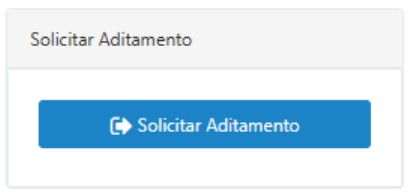

Um aditamento em um convênio entre uma Prefeitura e o Governo do Estado é uma modificação formal dos termos originalmente acordados no convênio. Ele pode incluir alterações em diversas, tais como: prazos, adequações no projeto ou cláusulas específicas do convênio. O aditamento é feito por meio de um termo aditivo, que precisa ser formalizado e assinado por ambas as partes e publicado no DOE para ter validade legal.
No caso dos convênios com a SGRI o aditamento não pode alterar substancialmente o objeto conveniado. Exemplos de aditamento:
• Prorrogação de prazo: Estender o período de execução das atividades previstas no convênio, incluindo a finalização do objeto, prestação de contas e pagamentos.
• Adequação de projeto: Adequar o escopo das atividades a serem realizados.
• Revisão de cláusulas: Atualizar ou corrigir cláusulas específicas do convênio que se façam necessárias
A Prefeitura Municipal deverá solicitar com antecedência mínima de 90 (noventa) dias através do Sistema Sem Papel - Demandas e não poderá executar o novo projeto antes da aprovação da Secretaria de Governo e Relações Institucionais.
Para solicitar o aditamento, a Prefeitura deverá clicar no botão azul “SOLICITAR ADITAMENTO”, no canto inferior direito.
Em seguida, abrirá uma aba “Justificativa Técnica” para que a Prefeitura justifique o motivo da solicitação do aditamento.
Se for um aditamento de prazo, a Justificativa Técnica deve ser embasada e detalhada descrevendo de maneira cronológica a situação do convênio e informando o motivo, a necessidade da prorrogação de prazo, assinada pelo(a) Prefeito(a) Municipal e Responsável Técnico.
No caso de adequação de projeto, esta deve ser embasada e detalhada descrevendo de maneira cronológica (desde a formalização do convênio) a situação do convênio e informando o motivo da necessidade da utilização para adequação e esclarecimentos - item a item – dos serviços propostos (supressões, inclusões e exclusões) e relatando a importância para o município, bem como, o bem-estar e qualidade de vida dos munícipes, assinada pelo(a) Prefeito(a) Municipal e Responsável Técnico.
Nota 1: O botão somente estará disponível nas etapas pertinentes ao município e com o login do prefeito
Etapa: “Documentos Beneficiário”:
É a etapa em que serão inseridos no Sistema Sem Papel - Demandas, a documentação necessária para a análise do aditamento.
1. Oficio do Prefeito Municipal: solicitando a alteração ou readequação do projeto conveniado.
2. Plano de Trabalho: adequado ao novo projeto (prazo, valor, endereço e descritivo) – no caso de aquisição este documento não é necessário.
3. Projeto Readequado: contendo todas as informações pertinentes, como: medidas, serviços excluídos, serviços incluídos, etc. O projeto deverá conter a identificação do responsável técnico e com o n.º da ART/RRT respectiva – no caso de aquisição este documento não é necessário.
4. ART/RRT: referente ao novo projeto (atendendo: projeto, fiscalização, orçamento e acessibilidade) – no caso de aquisição este documento não é necessário.
5. Memorial Descritivo Complementar: referente aos serviços a serem executados, assinado pelo responsável técnico - modelo “Anexo-4”.
6. Planilha Orçamentária Comparativa: contendo a identificação do responsável técnico e com o n.º da ART/RRT respectiva - modelo “Anexo 02-B”.
7. Cronograma Físico-Financeiro de Desembolso: a Prefeitura deverá propor o cronograma com a nova configuração de valores. O novo cronograma fará parte integrante do convênio a ser aditado - modelo “Anexo 01-A” se for aquisição e modelo “Anexo 01-B” se for obra.
8. Nota de Empenho da Contrapartida: nota de empenho da Prefeitura no valor total da contrapartida atual.
9. Portaria do Responsável Técnico: se ocorrer modificação.
10. Prestação de Contas: atualizada até o último repasse.
Após inserir todos os documentos citados acima, o município deverá encaminhar a demanda para “Análise Técnica”, que pode retornar como diligência para ajustes ou ser aprovado para a próxima etapa.
É a etapa em que serão inseridos no Sistema Sem Papel - Demandas, a documentação necessária para a análise do aditamento.
1. Oficio do Prefeito Municipal: solicitando a prorrogação do prazo, atentar-se para o período, levando-se em conta a execução da obra, emissão da prestação de contas, análise técnica e contábil da prestação de contas, vistorias e encerramento;
2. Cronograma Físico – Financeiro de Desembolso: a Prefeitura deverá propor o cronograma com o novo prazo. O novo cronograma fará parte integrante do convênio a ser prorrogado - modelo “Anexo 01-A” se for aquisição e modelo “Anexo 01-B” se for obra.
3. Prestação de Contas: atualizada até o último repasse.
4. Relatório de Estágio da Obra: detalhado, apontando a situação real da obra acompanhado de relatório fotográfico colorido e devidamente atestado pelo Responsável Técnico designado na portaria do convênio. Após inserir todos os documentos citados acima, o município deverá encaminhar a demanda para “Análise Orçamentária”, que pode retornar como diligência para ajustes ou ser aprovado para a próxima etapa.